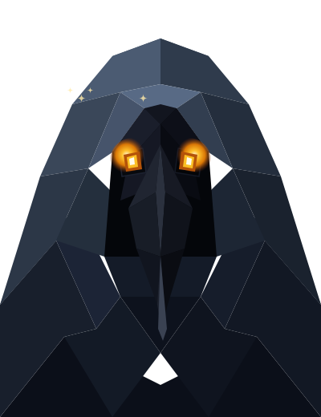

AETHELGARD TRANSIT AUTHORITY
Rift Rails
The Infinite Express
A crossing of infinite Ley-Rails. Keep the train fueled. Keep the crew together.
AETHELGARD TRANSIT AUTHORITY
The Infinite Express
A crossing of infinite Ley-Rails. Keep the train fueled. Keep the crew together.
Auto-Save Status: Active. Voyage telemetry is automatically stored to your conduit after every Rift Jump.
Catastrophic breaches or void-stranding automatically clear the archive for subsequent journeys.
1. EXPLORE: Spends Energy (EN) on the Bridge to survey the local realm and open station gates.
2. RESOLVE: Execute revealed rites (Siphon Fuel, Harvest Flux, Hunt Voidbeasts, or Trade at Hubs).
3. UPGRADE: Access the Workshop to mutate train components.
4. RIFT JUMP: When EN is exhausted, initiate a Jump to advance. EN replenishes completely upon realm breach.
• Hull: Warded iron plating. Reaching 0% causes catastrophic destruction.
• Fuel: Inter-realm propulsion reserves. Does not auto-recharge. Must be siphoned or bought.
• Energy: Dimension-local operational capacity. Fully resets to engine maximum after every jump.
• Flux: Catalytic alchemical currency for Workshop mutations and Hub bazaar items.
• Mutating the Crucible Engine increases Max EN per sector.
• Increased engine mass raises the Fuel cost per Rift Jump. Ensure you secure fuel before upgrading.
• If Fuel drops below the jump threshold, use Strip Plating on the Bridge to convert Hull into emergency Fuel.
Stories installed by active plugins appear here.
